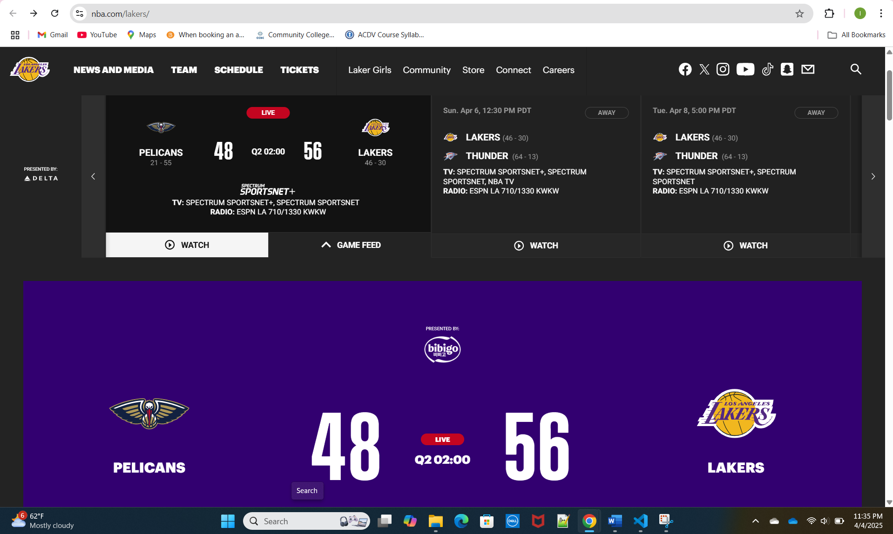

Los Angeles Lakers Official Website
This site is for fans of the Los Angeles Lakers, including people who want team news, game schedules, player stats, and ticket information.
The site has a top menu with sections like News, Schedule, Roster, and Tickets. It also has images and videos that lead to stories about recent games and players.
Contrast: The site uses a dark background with white and gold text to help everything stand out clearly.
According to the accessibility checker the Audit Score was 70.
Yes, the site helps users find what they need, like the game schedule or latest news. The buttons and links are labeled clearly.
Yes, tasks like checking scores or buying tickets are fast and easy. The homepage shows popular links so we don’t have to search much.
The site looks very engaging with game photos, live score when the lakers are playing, bold colors, and highlights. The way the page is setup keeps me and fans interested.
I recommend adding better labels for links and improving contrast on smaller text for better accessibility.
